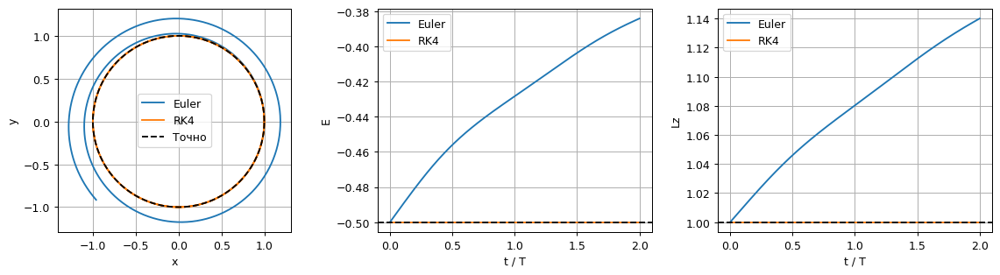
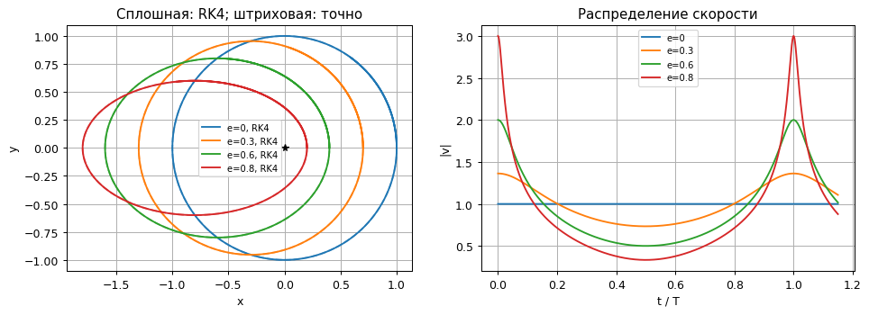
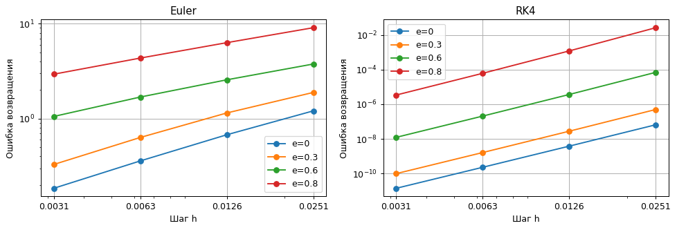

Расчёты уже выполнены. Код раскрывается нажатием. Анимации работают без сети. Математические формулы в этой HTML-копии сохранены в записи LaTeX; для их набора откройте исходный notebook в Jupyter.
Безразмерные переменные, гравитационный параметр $\mu=1$, масса пробного тела 1. Состояние $s=(x,y,v_x,v_y)$, ускорение $-\mathbf r/r^3$. Сначала проверяем круговую орбиту, затем исследуем эллипсы с одинаковой большой полуосью $a=1$ и эксцентриситетами от 0 до 0.8. Все тела независимы: между собой не взаимодействуют, центр неподвижен.
Все ячейки выполняются сверху вниз. Для воспроизведения анимаций используйте ▶.
import time
import re
from pathlib import Path
import numpy as np
import matplotlib.pyplot as plt
from matplotlib.animation import FuncAnimation
from IPython.display import display, HTML, Markdown
from IPython import get_ipython
from scipy.optimize import brentq
get_ipython().run_line_magic('matplotlib', 'inline')
started = time.perf_counter()
plt.rcParams.update({'figure.dpi': 90, 'font.size': 10,
'axes.grid': True, 'animation.embed_limit': 50})
COLORS = plt.cm.viridis(np.linspace(0.08, 0.92, 10))
def step(rhs, state, h, method='RK4'):
"""Явный Эйлер или классический RK4 для автономной системы."""
k1 = rhs(state)
if method == 'Euler':
return state + h*k1
if method != 'RK4':
raise ValueError(method)
k2 = rhs(state + h*k1/2)
k3 = rhs(state + h*k2/2)
k4 = rhs(state + h*k3)
return state + h*(k1 + 2*k2 + 2*k3 + k4)/6
def integrate(rhs, initial, duration, h, method='RK4'):
# Последний момент точно равен duration; фактический шаг не больше h.
n = int(np.ceil(duration/h))
t = np.linspace(0, duration, n+1)
y = np.empty((n+1, len(initial)))
y[0] = initial
for j in range(n):
y[j+1] = step(rhs, y[j], t[j+1]-t[j], method)
return t, y
def sample(t, y, times):
"""Интерполяция только для кадров; ошибки считаются на расчётной сетке."""
return np.column_stack([np.interp(times, t, y[:, j]) for j in range(y.shape[1])])
def table(headers, rows):
escaped = lambda values: [str(value).replace('|', '|') for value in values]
display(Markdown('| ' + ' | '.join(escaped(headers)) + ' |\n| ' +
' | '.join(['---']*len(headers)) + ' |\n' +
'\n'.join('| ' + ' | '.join(escaped(row)) + ' |' for row in rows)))
def show_animation(fig, update, frames, filename):
# Кадры встроены: работают без ffmpeg, сети и дополнительных виджетов.
movie = FuncAnimation(fig, update, frames=frames, interval=70, blit=False)
html = movie.to_jshtml(default_mode='once')
# Matplotlib использует внешний шрифт для значков; заменяем локальным текстом.
html = re.sub(r'<link\s+rel="stylesheet"\s+href="[^"]+">', '', html)
icons = {'fa-minus': '−', 'fa-plus': '+', 'fa-fast-backward': '⏮',
'fa-backward': '◀|', 'fa-step-backward': '|◀', 'fa-play': '▶',
'fa-play fa-flip-horizontal': '◀', 'fa-step-forward': '▶|', 'fa-pause': 'Ⅱ',
'fa-stop': '■', 'fa-forward': '|▶', 'fa-fast-forward': '⏭',
'fa-refresh': '↻'}
html = re.sub(r'<i class="fa ([^"]+)"[^>]*></i>',
lambda match: icons.get(match[1], match[1].removeprefix('fa-')), html)
plt.close(fig)
out = Path('animations')
out.mkdir(exist_ok=True)
(out/filename).write_text('<!doctype html><meta charset="utf-8">' + html, encoding='utf-8')
display(HTML(html))
mu, a = 1., 1.
T = 2*np.pi*np.sqrt(a**3/mu)
def gravity(s):
r = np.linalg.norm(s[:2])
return np.r_[s[2:], -mu*s[:2]/r**3]
def orbit_initial(e):
return np.array([a*(1-e), 0., 0., np.sqrt(mu/a*(1+e)/(1-e))])
def invariants(s):
energy = np.sum(s[:, 2:]**2, axis=1)/2-mu/np.linalg.norm(s[:, :2], axis=1)
angular_momentum = s[:, 0]*s[:, 3]-s[:, 1]*s[:, 2]
return energy, angular_momentum
def exact_orbit(t, e):
# Уравнение Кеплера E-e sin E=M решаем Ньютоном; e<=0.8 в опытах ниже.
M = np.asarray(t)*np.sqrt(mu/a**3)
E = M.copy()
for _ in range(40):
correction = (E-e*np.sin(E)-M)/(1-e*np.cos(E))
E -= correction
if np.max(np.abs(correction)) < 1e-13:
break
assert np.max(np.abs(E-e*np.sin(E)-M)) < 1e-11
factor = np.sqrt(mu/a**3)/(1-e*np.cos(E))
return np.column_stack([a*(np.cos(E)-e), a*np.sqrt(1-e**2)*np.sin(E),
-a*np.sin(E)*factor, a*np.sqrt(1-e**2)*np.cos(E)*factor])
При $(x,y,v_x,v_y)=(1,0,0,1)$ точное положение равно $(\cos t,\sin t)$. Удельная энергия $E=|v|^2/2-1/r=-1/2$, момент импульса $L_z=xv_y-yv_x=1$. Сравниваем орбиты и инварианты за два оборота. В таблице максимум ошибки положения относительно точного решения, а не только ошибка в последнем узле.
fig, ax = plt.subplots(1, 3, figsize=(13, 3.6))
rows, errors = [], {}
for method in ['Euler', 'RK4']:
errors[method] = []
for n in [100, 200, 400, 800]:
t, s = integrate(gravity, orbit_initial(0), 2*T, T/n, method)
err = np.max(np.linalg.norm(s[:, :2]-exact_orbit(t, 0)[:, :2], axis=1))
errors[method].append(err); rows.append([method, f'T/{n}', f'{err:.3e}'])
t, s = integrate(gravity, orbit_initial(0), 2*T, T/400, method)
E, J = invariants(s)
ax[0].plot(s[:, 0], s[:, 1], label=method)
ax[1].plot(t/T, E, label=method); ax[2].plot(t/T, J, label=method)
exact = exact_orbit(np.linspace(0, T, 600), 0)
ax[0].plot(exact[:, 0], exact[:, 1], 'k--', label='Точно')
ax[0].plot(0, 0, 'k*'); ax[0].set(xlabel='x', ylabel='y', aspect='equal')
ax[1].axhline(-.5, color='k', ls='--'); ax[1].set(xlabel='t / T', ylabel='E')
ax[2].axhline(1, color='k', ls='--'); ax[2].set(xlabel='t / T', ylabel='Lz')
for panel in ax: panel.legend()
fig.tight_layout(); display(fig); plt.close(fig)
table(['Метод', 'Шаг', 'max ошибка положения'], rows)
assert errors['RK4'][-2]/errors['RK4'][-1] > 12
assert errors['Euler'][-1] < errors['Euler'][0]

| Метод | Шаг | max ошибка положения |
|---|---|---|
| Euler | T/100 | 2.764e+00 |
| Euler | T/200 | 2.419e+00 |
| Euler | T/400 | 2.165e+00 |
| Euler | T/800 | 1.454e+00 |
| RK4 | T/100 | 7.706e-06 |
| RK4 | T/200 | 3.811e-07 |
| RK4 | T/400 | 2.068e-08 |
| RK4 | T/800 | 1.200e-09 |
Старт из перицентра: $r_p=a(1-e)$, $v_p=\sqrt{(1+e)/(a(1-e))}$. Аналитическая форма: $x=a(\cos E-e)$, $y=a\sqrt{1-e^2}\sin E$, где эксцентрическая аномалия $E$ связана со временем уравнением Кеплера $E-e\sin E=\sqrt{1/a^3}\,t$. Для всех эксцентриситетов $T=2\pi a^{3/2}$.
Численный период измерим по следующему пересечению $y=0$ снизу вверх при $x>0$, уточнив событие внутри шага RK4. Это измерение периода не использует возвращение по готовой формуле времени. При $e=0$ пересечение служит той же меткой фазы.
eccentricities = [0., .3, .6, .8]
fig, ax = plt.subplots(1, 2, figsize=(11, 4))
rows = []
for e in eccentricities:
t, s = integrate(gravity, orbit_initial(e), 1.15*T, T/4000)
indices = np.flatnonzero((s[:-1, 1] < 0) & (s[1:, 1] >= 0) & (s[1:, 0] > 0))
j = indices[0]
dt = brentq(lambda dt: step(gravity, s[j], dt)[1], 0, t[j+1]-t[j], xtol=1e-14)
measured = t[j]+dt
exact = exact_orbit(t, e)
line, = ax[0].plot(s[:, 0], s[:, 1], label=f'e={e:g}, RK4')
ax[0].plot(exact[:, 0], exact[:, 1], '--', color=line.get_color(), alpha=.6)
ax[1].plot(t/T, np.linalg.norm(s[:, 2:], axis=1), label=f'e={e:g}')
shape_error = np.max(np.abs((s[:, 0]+a*e)**2/a**2+s[:, 1]**2/(a*a*(1-e*e))-1))
rows.append([e, f'{measured:.9f}', f'{abs(measured/T-1):.3e}', f'{shape_error:.3e}'])
assert abs(measured/T-1) < 2e-6
assert shape_error < 2e-5
ax[0].plot(0, 0, 'k*'); ax[0].set(xlabel='x', ylabel='y', aspect='equal', title='Сплошная: RK4; штриховая: точно')
ax[1].set(xlabel='t / T', ylabel='|v|', title='Распределение скорости')
for panel in ax: panel.legend(fontsize=8)
fig.tight_layout(); display(fig); plt.close(fig)
table(['e', 'Численный период', '|T_h/T−1|', 'max невязка уравнения эллипса'], rows)
print(f'Аналитический период для всех e: {T:.9f}')

| e | Численный период | |T_h/T−1| | max невязка уравнения эллипса |
|---|---|---|---|
| 0.0 | 6.283185307 | 1.483e-13 | 3.916e-13 |
| 0.3 | 6.283185307 | 7.215e-13 | 4.882e-12 |
| 0.6 | 6.283185307 | 5.999e-11 | 2.776e-10 |
| 0.8 | 6.283185241 | 1.061e-08 | 3.656e-08 |
Аналитический период для всех e: 6.283185307
Считаем $\|\mathbf r_h(T)-\mathbf r(0)\|$ строго в момент $T$, без интерполяции между соседними узлами: шаг равен $T/N$. Для Эйлера и RK4 используем одну сетку. Ошибка возвращения объединяет ошибки формы и фазы; сама по себе она не заменяет проверку траектории и периода из предыдущего раздела.
ns = np.array([250, 500, 1000, 2000])
fig, ax = plt.subplots(1, 2, figsize=(11, 3.8))
rows, return_errors = [], {}
for panel, method in zip(ax, ['Euler', 'RK4']):
for e in eccentricities:
errs = []
for n in ns:
ti, si = integrate(gravity, orbit_initial(e), T, T/n, method)
err = np.linalg.norm(si[-1, :2]-si[0, :2])
errs.append(err)
rows.append([method, e, int(n), f'{err:.3e}'])
return_errors[(method, e)] = errs
panel.loglog(T/ns, errs, 'o-', label=f'e={e:g}')
panel.set(title=method, xlabel='Шаг h', ylabel='Ошибка возвращения'); panel.legend()
panel.set_xticks(T/ns, [f'{h:.4f}' for h in T/ns]); panel.xaxis.set_minor_formatter(plt.NullFormatter())
fig.tight_layout(); display(fig); plt.close(fig)
table(['Метод', 'e', 'Шагов за T', 'Ошибка возвращения'], rows)
for e in eccentricities:
errs = return_errors[('RK4', e)]
assert errs[-1] < errs[0]/100
assert errs[-2]/errs[-1] > 12
table(['e', 'v в перицентре', 'v в апоцентре', 'v_p / v_a', 'r_p / v_p'],
[[e, f'{np.sqrt((1+e)/(1-e)):.3f}', f'{np.sqrt((1-e)/(1+e)):.3f}',
f'{(1+e)/(1-e):.1f}', f'{(1-e)**1.5/np.sqrt(1+e):.4f}'] for e in eccentricities])
display(Markdown('**Ответ:** в перицентре тело движется быстрее, в апоцентре медленнее. '
'При e=0.8 отношение скоростей равно 9. Локальное время прохождения '
'перицентра rₚ/vₚ уменьшается примерно в 15 раз относительно круга. '
'Поэтому одинаковое число шагов за период хуже разрешает вытянутую орбиту; '
'при постоянном шаге его следует выбирать по быстрому движению у перицентра.'))

| Метод | e | Шагов за T | Ошибка возвращения |
|---|---|---|---|
| Euler | 0.0 | 250 | 1.206e+00 |
| Euler | 0.0 | 500 | 6.759e-01 |
| Euler | 0.0 | 1000 | 3.585e-01 |
| Euler | 0.0 | 2000 | 1.847e-01 |
| Euler | 0.3 | 250 | 1.886e+00 |
| Euler | 0.3 | 500 | 1.147e+00 |
| Euler | 0.3 | 1000 | 6.330e-01 |
| Euler | 0.3 | 2000 | 3.290e-01 |
| Euler | 0.6 | 250 | 3.756e+00 |
| Euler | 0.6 | 500 | 2.561e+00 |
| Euler | 0.6 | 1000 | 1.687e+00 |
| Euler | 0.6 | 2000 | 1.054e+00 |
| Euler | 0.8 | 250 | 9.056e+00 |
| Euler | 0.8 | 500 | 6.302e+00 |
| Euler | 0.8 | 1000 | 4.338e+00 |
| Euler | 0.8 | 2000 | 2.935e+00 |
| RK4 | 0.0 | 250 | 6.569e-08 |
| RK4 | 0.0 | 500 | 3.848e-09 |
| RK4 | 0.0 | 1000 | 2.325e-10 |
| RK4 | 0.0 | 2000 | 1.428e-11 |
| RK4 | 0.3 | 250 | 4.995e-07 |
| RK4 | 0.3 | 500 | 2.797e-08 |
| RK4 | 0.3 | 1000 | 1.648e-09 |
| RK4 | 0.3 | 2000 | 9.994e-11 |
| RK4 | 0.6 | 250 | 6.928e-05 |
| RK4 | 0.6 | 500 | 3.660e-06 |
| RK4 | 0.6 | 1000 | 2.082e-07 |
| RK4 | 0.6 | 2000 | 1.238e-08 |
| RK4 | 0.8 | 250 | 2.595e-02 |
| RK4 | 0.8 | 500 | 1.191e-03 |
| RK4 | 0.8 | 1000 | 6.102e-05 |
| RK4 | 0.8 | 2000 | 3.402e-06 |
| e | v в перицентре | v в апоцентре | v_p / v_a | r_p / v_p |
|---|---|---|---|---|
| 0.0 | 1.000 | 1.000 | 1.0 | 1.0000 |
| 0.3 | 1.363 | 0.734 | 1.9 | 0.5137 |
| 0.6 | 2.000 | 0.500 | 4.0 | 0.2000 |
| 0.8 | 3.000 | 0.333 | 9.0 | 0.0667 |
Ответ: в перицентре тело движется быстрее, в апоцентре медленнее. При e=0.8 отношение скоростей равно 9. Локальное время прохождения перицентра rₚ/vₚ уменьшается примерно в 15 раз относительно круга. Поэтому одинаковое число шагов за период хуже разрешает вытянутую орбиту; при постоянном шаге его следует выбирать по быстрому движению у перицентра.
Выбран e=0.6, одинаковый шаг T/2000. Штриховой линией показана точная форма, пустым кружком — точное положение в текущий момент. След позволяет увидеть ошибку формы, разность положений — ошибку фазы. Масштаб панелей общий.
e_selected = .6
frames = np.linspace(0, T, 111)
motion = []
for method in ['Euler', 'RK4']:
ti, si = integrate(gravity, orbit_initial(e_selected), T, T/2000, method)
motion.append(sample(ti, si, frames))
reference = exact_orbit(frames, e_selected)
outline = exact_orbit(np.linspace(0, T, 800), e_selected)
fig, ax = plt.subplots(1, 2, figsize=(9, 4), dpi=75, sharex=True, sharey=True)
artists = []
all_positions = np.vstack([s[:, :2] for s in motion]+[outline[:, :2]])
lo, hi = all_positions.min(axis=0)-.15, all_positions.max(axis=0)+.15
for panel, method in zip(ax, ['Euler', 'RK4']):
panel.plot(outline[:, 0], outline[:, 1], 'k--', label='Точный эллипс')
panel.plot(0, 0, 'k*')
trail, = panel.plot([], [], color='tab:blue')
dot, = panel.plot([], [], 'o', color='tab:blue', label=method)
exact_dot, = panel.plot([], [], 'o', mfc='none', mec='tab:red', ms=8, label='Точное положение')
artists.append((trail, dot, exact_dot))
panel.set(xlim=(lo[0], hi[0]), ylim=(lo[1], hi[1]), aspect='equal', xlabel='x', ylabel='y', title=method)
panel.legend(fontsize=8)
title = fig.suptitle(''); fig.tight_layout()
def update(j):
for s, (trail, dot, exact_dot) in zip(motion, artists):
trail.set_data(s[:j+1, 0], s[:j+1, 1]); dot.set_data([s[j, 0]], [s[j, 1]])
exact_dot.set_data([reference[j, 0]], [reference[j, 1]])
title.set_text(f'e=0.6, h=T/2000, t/T={frames[j]/T:.3f}')
show_animation(fig, update, len(frames), '1.3_methods.html')
Одинаковая большая полуось a=1 и общий период T. Все тела стартуют из своих перицентров при t=0. Для движения используется RK4 с шагом T/4000, для формы — аналитические эллипсы. Быстрые участки находятся около общего притягивающего центра.
es = np.linspace(0, .8, 10)
frames = np.linspace(0, T, 121)
motions = []
fig, ax = plt.subplots(figsize=(7, 4.5), dpi=75)
dots = []
for e, color in zip(es, COLORS):
ti, si = integrate(gravity, orbit_initial(e), T, T/4000)
motions.append(sample(ti, si, frames))
outline = exact_orbit(np.linspace(0, T, 800), e)
ax.plot(outline[:, 0], outline[:, 1], color=color, alpha=.4, lw=1)
dots.append(ax.plot([], [], 'o', color=color, label=f'e={e:.2f}')[0])
ax.plot(0, 0, 'k*', ms=12)
ax.set(xlim=(-1.95, 1.15), ylim=(-1.15, 1.15), aspect='equal', xlabel='x', ylabel='y')
ax.legend(loc='center left', bbox_to_anchor=(1.01, .5), fontsize=8)
title = ax.set_title('Ten elliptical orbits'); fig.tight_layout()
def update(j):
for s, dot in zip(motions, dots): dot.set_data([s[j, 0]], [s[j, 1]])
title.set_text(f'Общий период, t/T = {frames[j]/T:.3f}')
show_animation(fig, update, len(frames), '1.3_ensemble.html')
Разделим период на 12 равных интервалов. Сектор — область между двумя радиусами-векторами и дугой орбиты, а не круговой сектор с постоянным радиусом. Теоретическая площадь каждого $S_i=\pi a^2\sqrt{1-e^2}/12$, поскольку $dS/dt=L_z/2$. Проверяем площади по численной траектории RK4 формулой площади многоугольника с вершиной в центре притяжения. Затем показываем постепенное закрашивание этих же секторов; справа численная скорость и общий указатель времени.
from matplotlib.patches import Polygon
sectors, points_per_sector = 12, 600
ti, si = integrate(gravity, orbit_initial(e_selected), T, T/(sectors*points_per_sector))
expected_area = np.pi*a*a*np.sqrt(1-e_selected**2)/sectors
areas = []
for k in range(sectors):
part = si[k*points_per_sector:(k+1)*points_per_sector+1, :2]
areas.append(abs(np.sum(part[:-1, 0]*part[1:, 1]-part[1:, 0]*part[:-1, 1]))/2)
table(['Сектор', 'Площадь по RK4', 'Относительная ошибка к теории'],
[[j+1, f'{area:.8f}', f'{abs(area/expected_area-1):.3e}'] for j, area in enumerate(areas)])
assert max(abs(np.array(areas)/expected_area-1)) < 2e-5
fig, ax = plt.subplots(1, 2, figsize=(10, 4), dpi=75)
ax[0].plot(si[:, 0], si[:, 1], 'k-', lw=1)
ax[0].plot(0, 0, 'k*')
patches = []
for k in range(sectors):
patch = Polygon(np.zeros((3, 2)), facecolor=plt.cm.tab20(k), alpha=.65)
ax[0].add_patch(patch); patches.append(patch)
radius, = ax[0].plot([], [], 'k-', lw=1)
body, = ax[0].plot([], [], 'ko')
ax[0].set(xlim=(-1.8, .6), ylim=(-1, 1), aspect='equal', xlabel='x', ylabel='y')
speed = np.linalg.norm(si[:, 2:], axis=1)
ax[1].plot(ti/T, speed, color='tab:blue')
for boundary in np.linspace(0, 1, sectors+1): ax[1].axvline(boundary, color='gray', lw=.5)
cursor = ax[1].axvline(0, color='red'); dot, = ax[1].plot([], [], 'ro')
ax[1].set(xlabel='t / T', ylabel='|v|', xlim=(0, 1))
title = fig.suptitle(''); fig.tight_layout()
indices = np.linspace(0, len(ti)-1, 121).round().astype(int)
def update(j):
idx = indices[j]
for k, patch in enumerate(patches):
start, stop = k*points_per_sector, min(idx, (k+1)*points_per_sector)
patch.set_visible(stop > start)
if stop > start: patch.set_xy(np.vstack([[0, 0], si[start:stop+1, :2], [0, 0]]))
radius.set_data([0, si[idx, 0]], [0, si[idx, 1]])
body.set_data([si[idx, 0]], [si[idx, 1]])
cursor.set_xdata([ti[idx]/T]*2); dot.set_data([ti[idx]/T], [speed[idx]])
title.set_text(f'e=0.6, t/T={ti[idx]/T:.3f}; Δt=T/12, S≈{expected_area:.4f}')
show_animation(fig, update, len(indices), '1.3_sectors.html')
| Сектор | Площадь по RK4 | Относительная ошибка к теории |
|---|---|---|
| 1 | 0.20943928 | 1.090e-06 |
| 2 | 0.20943947 | 2.031e-07 |
| 3 | 0.20943949 | 7.927e-08 |
| 4 | 0.20943950 | 4.761e-08 |
| 5 | 0.20943950 | 3.593e-08 |
| 6 | 0.20943950 | 3.163e-08 |
| 7 | 0.20943950 | 3.163e-08 |
| 8 | 0.20943950 | 3.593e-08 |
| 9 | 0.20943950 | 4.761e-08 |
| 10 | 0.20943949 | 7.927e-08 |
| 11 | 0.20943947 | 2.031e-07 |
| 12 | 0.20943928 | 1.090e-06 |
Постоянный шаг нужно уменьшать, что подтверждают ошибки возвращения.
но это наблюдение на нескольких оборотах, а не утверждение о долговременной точности.
расчёт периода, уравнение Кеплера и правильное построение заметённых секторов.
Оценка для студента: 9–15 часов со знанием Python и механики; 15–24 часа при первом опыте NumPy/Matplotlib. Это наиболее трудоёмкая из трёх работ, главным образом из-за аналитического эталона и третьей анимации. Уравнение Кеплера нужно здесь для точного положения во времени; для наложения одной только формы достаточно параметрического эллипса.
print(f'Все численные проверки пройдены. Полное выполнение: {time.perf_counter()-started:.1f} с.')
Все численные проверки пройдены. Полное выполнение: 26.8 с.